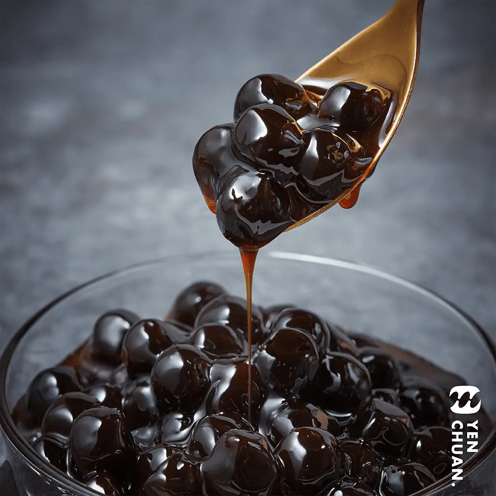
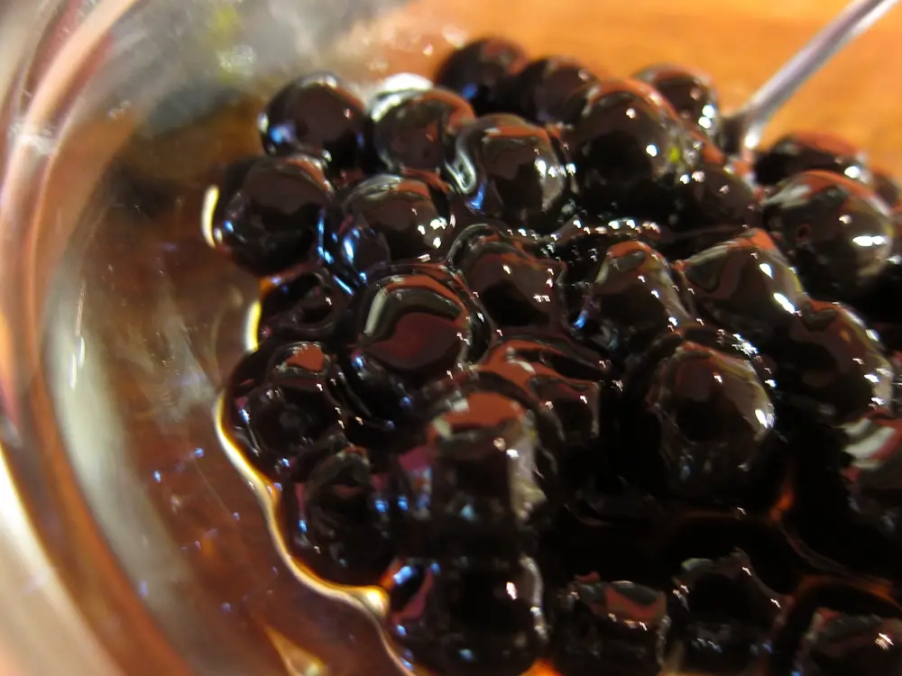
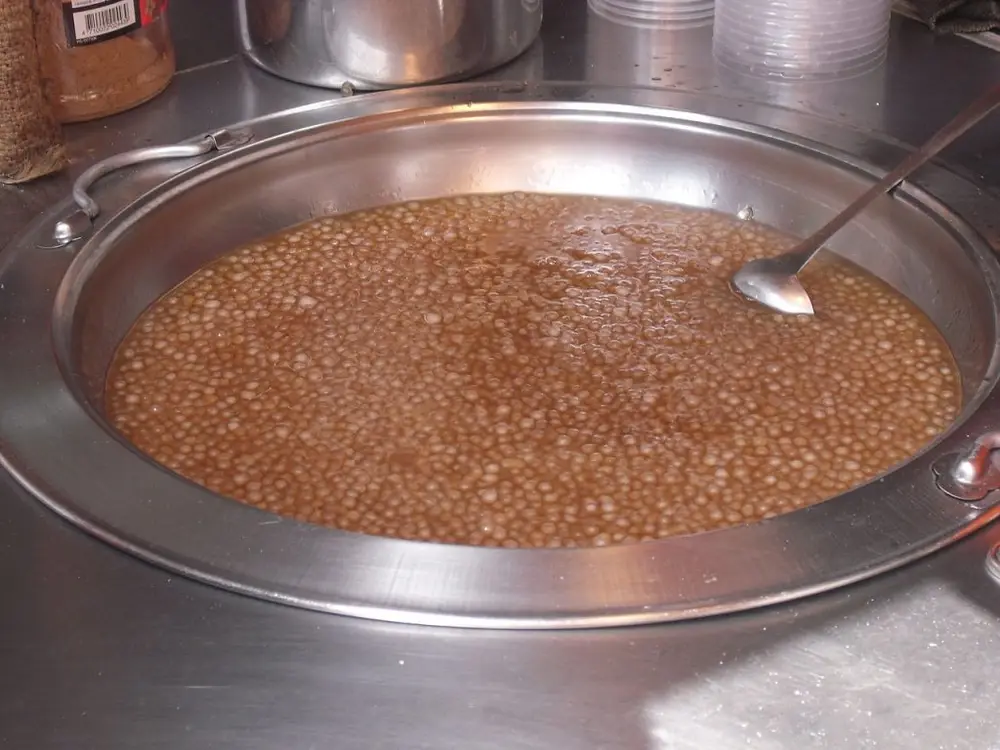

文章 / 飲品配方與資訊
Know your toppings: Tapioca pearls
這篇是英文原文，尚未完成繁體中文翻譯。中文選單與相關商品連結不會切回英文介面。

查看英文原文（尚未翻譯）
When we mention bubble tea, what comes into mind? Aside from rich creamy milk/milk tea, it’s bound to be tapioca pearls! Ever since the invention of the drink, this classic topping has been synonymous with boba tea.
What’s so special about tapioca pearls? What gives them that addicting chewiness? Read on to learn more!

What are tapioca pearls?
As their name suggests, tapioca pearls (or boba pearls) are small pearl-shaped toppings made with tapioca starch or cassava starch. Once those balls are cooked in hot water, the starch gives them that iconic chewy, bouncy texture.
Classic bubble tea uses boba pearls flavoured with brown/black sugar syrup. However there are also other variants, including white/amber pearls flavoured with honey instead of brown sugar. Some shops even use pearls with red bean fillings!
Aside from Taiwanese boba pearls, sometimes the term also refers to sago pearls, a topping used in Southeast Asian drinks and desserts. Unlike Taiwanese boba, sago pearls are smaller, less chewy and often unflavoured. Don’t get them mixed up!
How do you make it?
Making tapioca balls starts with – you guessed it – tapioca flour! The flour, alongside some other ingredients, is first mixed with boiling water to form a dough. It’s important to use boiling water here, as it allows the starch to gelatinize properly instead of turning into a gooey mess.
What really matters, however, is what comes after. There are two common methods of shaping the pearls: “Rolling” and “Cutting”.
Rolling
The “Rolling” method is the most common one used nowadays. Here, the dough is first cut into tiny balls, then those balls are “rolled” in a rolling tube. Meanwhile more powder and water are added in the process.
As the balls continue to roll and gather powder, they gradually grow in size. Once the balls reach the right diameter, they are removed from the machine and dried for storage.
Cutting
This method is more straightforward in comparison: The dough is simply cut into smaller pieces, then rolled into shape.
Compared to pearls made using the “rolling” method, “cut” pearls have a more evenly dense core, allowing them to be cooked throughly more easily. However, this method also takes longer to make, hence it’s less commonly used for mass production.
Tapioca pearl sizes
When you buy tapioca pearls from a supplier, chances are you’d find them labelled by numbers. Have you wondered where they come from?
The most common labelling methods are the diameter scale and the sieve size scale. The former refers to the diameter of the dried boba pearls, while the latter refers to the size of the sieve holes traditionally used to form the dried pearls.
Confused? Here’s a handy comparison chart!
| Diameter scale (mm) | Sieve Size Scale |
|---|---|
| 9.5-10mm | 2.5 |
| 8.5mm | 2.3 |
| 6-7mm | 2.0 |
| 4-5mm | 1.2 |
Bubble tea drinks usually use 9.5-10mm pearls, though some shops boast a mix between bigger and smaller pearls for a more unique mouthfeel. On the other hand, people often use smaller boba pearls in traditional Taiwanese desserts such as shaved ice and tofu hua.
In fact, Taiwan does make a distinction between “tapioca pearls” (珍珠/粉圓) and “boba” (波霸)! “The former often refers to smaller types of pearls, while “boba” refers to the larger variants. Keep this in mind when you buy drinks in Taiwan!

How To cook tapioca pearls?
Want to cook the boba to just the right chewy texture? Follow those simple instructions!
Total Time Needed :
1
Hour
What you’ll need
How to cook
Put a pot of water to boil, then add the dried pearls
Cook for 30 minutes, while gently stirring to avoid burning
Turn off the heat, then replace the pot lid. Leave to stew for another 30 minutes
Remove the pearls with a slotted spoon/wire scoop, wash with cold water, then soak the pearls in brown sugar syrup to flavour
When done right, the pearls should be translucent in colour (before soaking in syrup), and slightly springy to the touch.
To make things easier, you can use an automated tapioca cooker to cook larger batches in a pinch. In fact this is pretty common among bubble tea shops. Simply pre-set the cooking and stewing times, and the cooker takes care of things for you!
Get started with tapioca pearls!
Want to start making bubble tea? We’ve got you covered!
Find our range of boba pearls here, from the classic dried pearls to instant boba pearls!